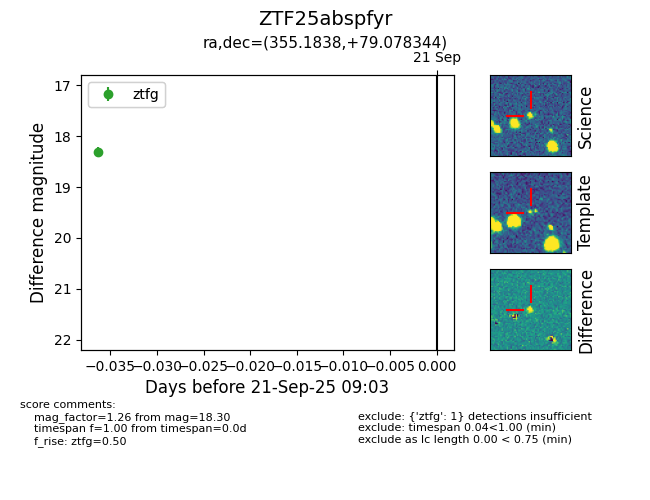

FINK: ZTF25abspfyr
Lasair: ZTF25abspfyr
ALeRCE: ZTF25abspfyr
ZTF25abspfyr (ztf,fink)
equatorial (ra, dec) = (355.1838,+79.07834)
galactic (l, b) = (119.4889,+16.68216)

last ztfg=18.30
1 ztfg detections